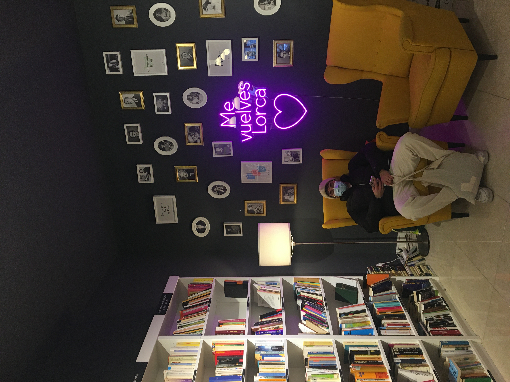
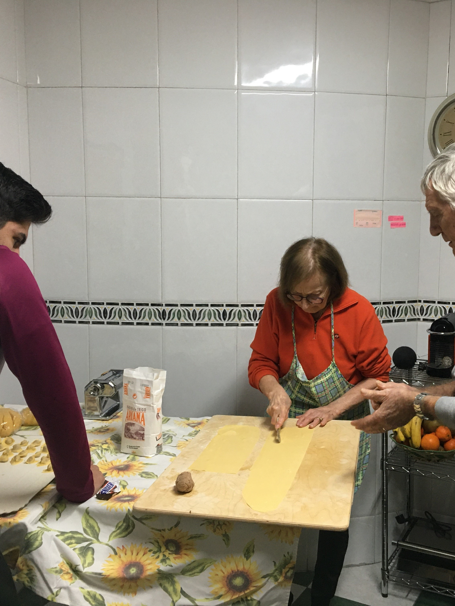

Mis aficiones
Lectura
Desde pequeña una de las actividades que siempre me ha gustado hacer en mi tiempo libre es leer. Recuerdo los periodos de vacaciones de Navidad, sentada en el sofá bajo una manta y devorando las lecturas que me habían regalado. Así como en las largas tardes de verano, tomando el sol con un libro de la mano.
Entre mis géneros preferidos están los libros clásicos, la novela negra, los romances de época o la novela histórica.
Cocina
Gracias a la pasión de mi madre y mi abuela, disfruto mucho observando, aprendiendo y practicando en la cocina. Soy una persona curiosa y me gusta probar recetas de todo el mundo, así como elaborar mis propios platos con los cuatro ingredientes que encuentras al abrir la nevera.
En mi casa el acto de comer no es una obligación, ni una necesidad para sobrevivir, sino una forma de compartir, estar en familia y vivir momentos llenos de vida alrededor de la misma mesa.
Naturaleza
Cuando busco tranquilidad, un momento para reflexionar o escapar del estrés de la rutina, mi primera opción es salir a dar un paseo al aire libre. Bien sea en un parque, en el campo o en el monte, el hecho de poder respirar aire fresco, sentir el viento, escuchar cantar a los pajarillos, me transmite paz.
Este verano cumplí uno de mis sueños cuando hice los últimos 180kms del Camino de Santiago. ¡Ya tengo un proyecto en mente para hacerlo desde Francia!